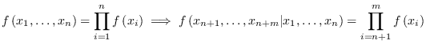
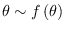
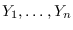
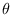
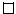
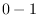
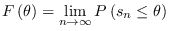
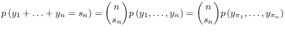
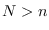
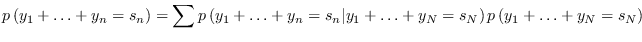

A pesar de que el teorema de representación de De Finetti nos
garantizan la existencia de una distribución a priori no nos dice
cual es el precisamente, podemos recolectar algunos ejemplos de ciertas
bibliografías para hacernos una idea de como operar con estos
conceptos. Si tenemos una muestra aleatoria independiente es simple
ver que

, esto quiere decir que no hay aprendizaje desde la experiencia.
Theorem 1
Sea
 y
 condicionalmente
independientes de  entonces
es intercambiable.
Proof.
Basta con probar lo siguiente

Básicamente el teorema de De Finetti es el recíproco de esta
proposición. La prueba de De Finetti para variables aleatorias
dicotómicas se explica a continuación. Consideremos el caso
de una secuencia intercambiable de variables aleatorias . Entonces
donde

notemos que

dado que vale para cualquier permutación, ahora bien, sea 
entonces
